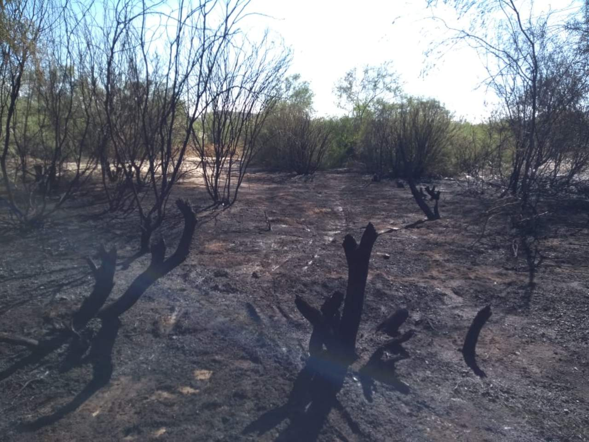
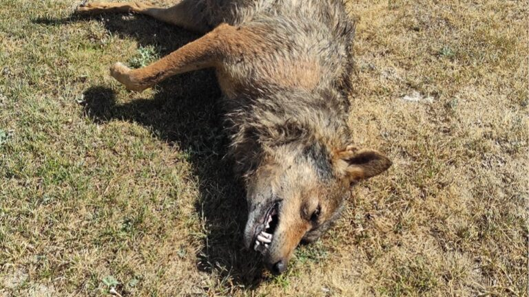

Tala ilegal
Se conoce como tala ilegal a cualquier afectación del bosque sin autorización o fuera de cualquier régimen regulado que permita el uso responsable de los recursos del bosque. Este fenómeno se presenta de 3 formas: los cultivos de supervivencia; narcotráfico y minería ilegal; y la tala ilegal con fines de comercialización.

En México la pena por cometer tala ilegal es de 2 a 15 años de prisión, según una reforma hecha por el poder legislativo en 2021. Sanción que pretende frenar este delito presente en al menos 20 estados de la República, según la Secretaría de Medio Ambiente y Recursos Naturales (Semarnat). Da clic para volver al inicio
Trafico de especies
El tráfico de especies, que incluye animales y plantas, es uno de los negocios ilícitos más dañinos y rentables del mundo. Este delito contra la naturaleza mueve entre 10.000 y 20.000 millones de euros cada año, una cifra equiparable a la que mueve el tráfico de armas y de drogas. El Gobierno de Coahuila, a través de la Secretaría de Ambiente del Estado (SMA) y la Procuraduría para la Protección del Ambiente de Coahuila (Propaec), junto con las autoridades municipales, coordina operativos permanentes para detectar la comercialización ilegal de fauna silvestre.
El precio de las multas por tráfico de animales va desde los 50 a 50 mil días de salario mínimo, lo que quiere decir que va desde los 7 mil 85 pesos, hasta los 7 millones 85 mil y, en caso de reincidencia, se podrá duplicar el monto de la multa impuesta originalmente.
Da clic para volver al inicio
Caceria ilegal
La caceria ilegal se traduce como el delito contra la fauna que consiste en cazar, pescar, adquirir, poseer, destruir o traficar con especies protegidas de fauna silvestre, con sus partes o con derivados de las mismas, o en realizar actividades que impidan o dificulten su reproducción o migración; asi como realizando acciones que atentan directamente contra la vida animal, contraviniendo las leyes y disposiciones de carácter general en la materia.
En Mexico la caceria ilegal se sanciona con una pena de uno a nueve años de prisión y por el equivalente de 20 a 50 mil días de salario mínimo. La condena es mayor si se caza a una especie protegida de peligro de extincion.
Sin embargo...
Especies como el lobo mexicano lamentablemente siguen siendo perseguidos por los ganaderos ya que se han encontrado especimenes muertos de manera sospechosa. Tambien otras especies como osos negros o serpientes son indiscriminadamente asesinadas al movilizarse a entornos urbanos o agricolas.

 Da clic para volver al inicio
Da clic para volver al inicioIncendios forestales
Un incendio forestal corresponde a un fuego que se propaga sin control a través de vegetación rural o urbana y pone en peligro a las personas, los bienes y el medio ambiente. En el mundo, los incendios forestales constituyen la causa más importante de destrucción de bosques. En un incendio forestal no sólo se pierden árboles y matorrales, sino también casas, animales, fuentes de trabajo e inclusive vidas humanas.

El Código Penal castiga de manera general a «los que incendiaren montes o masas forestales» con una pena de prisión que va desde un año hasta cinco, y una multa de doce a dieciocho meses.
Da clic para volver al inicio